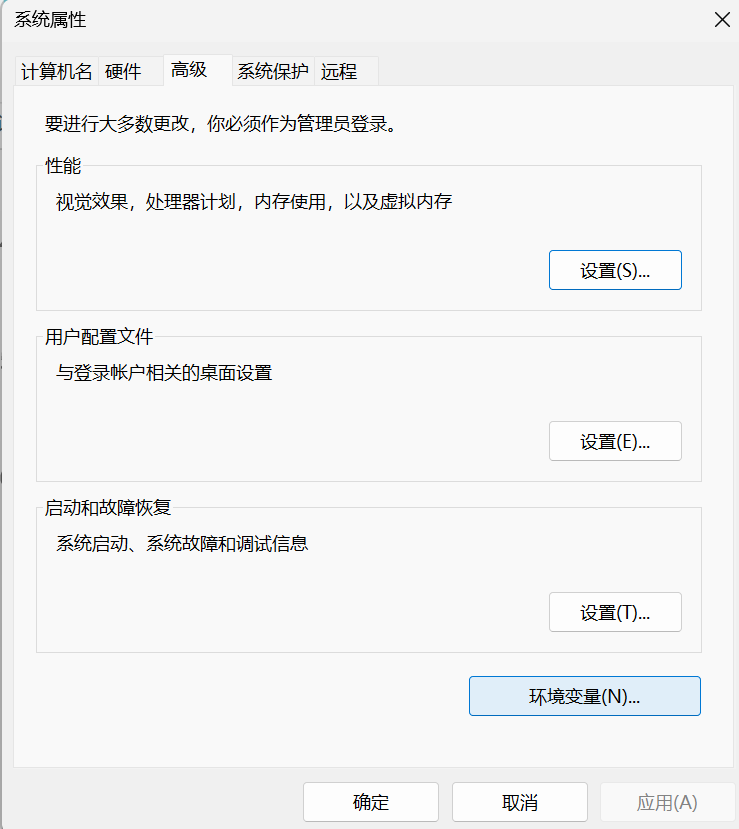
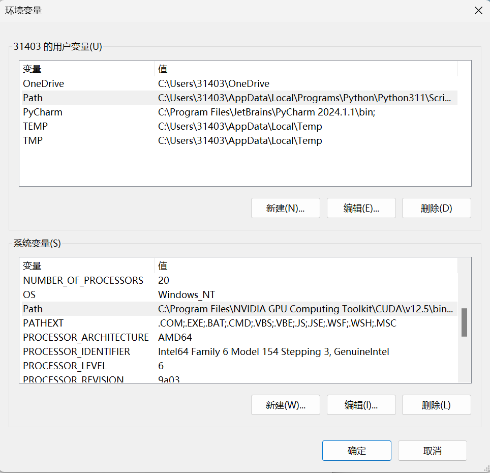
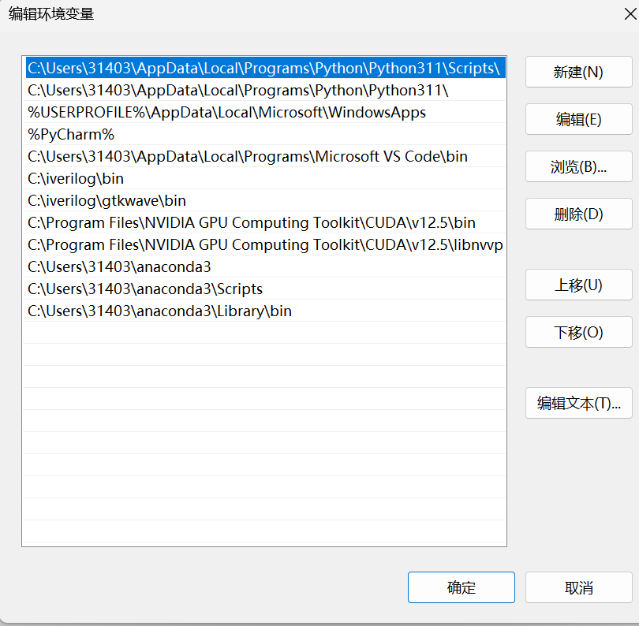
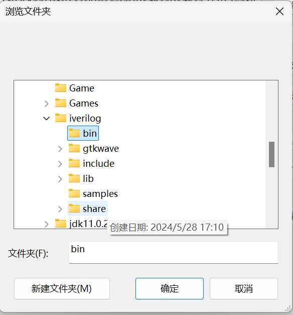
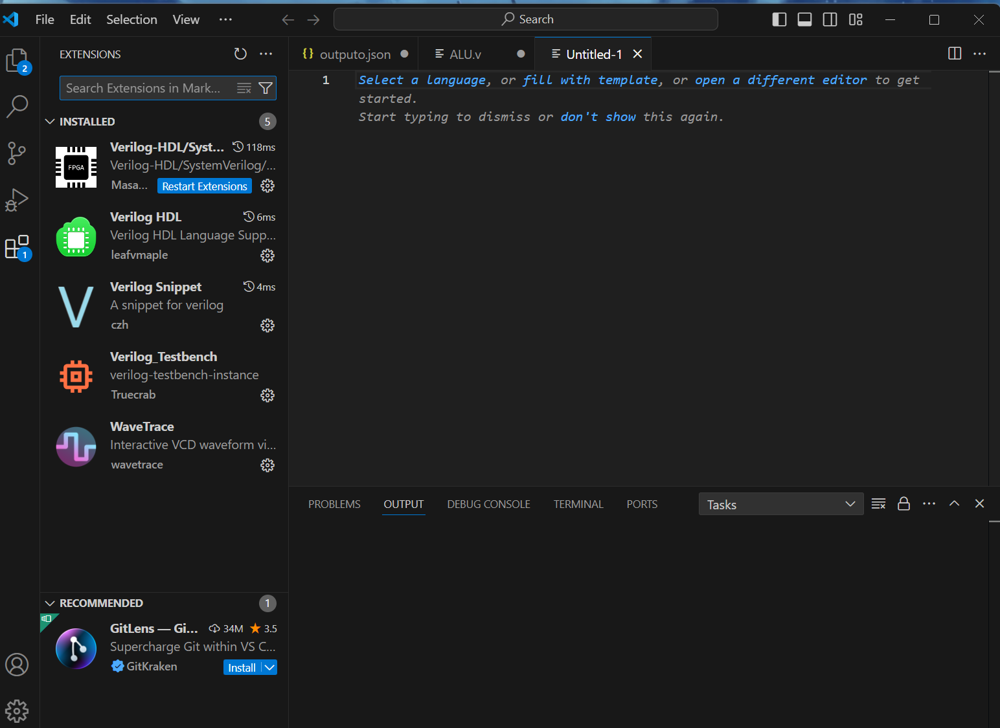
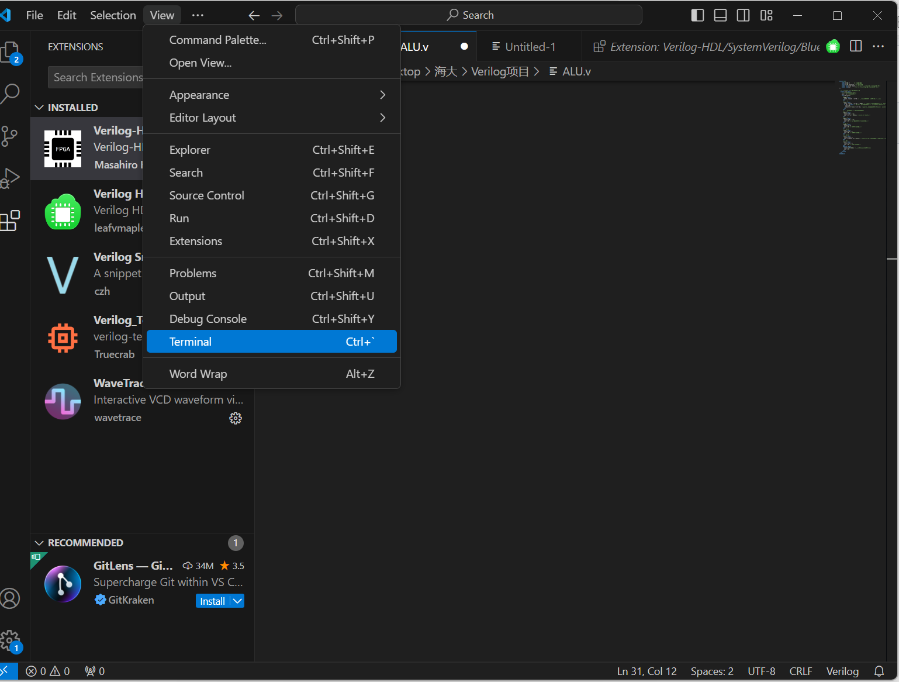
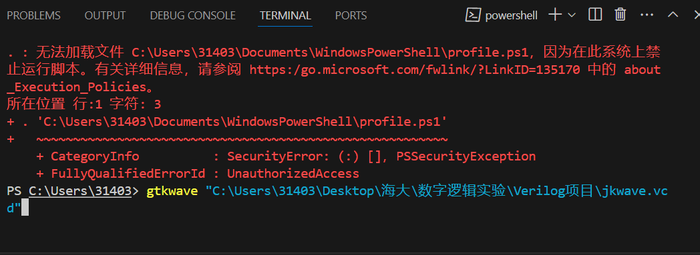
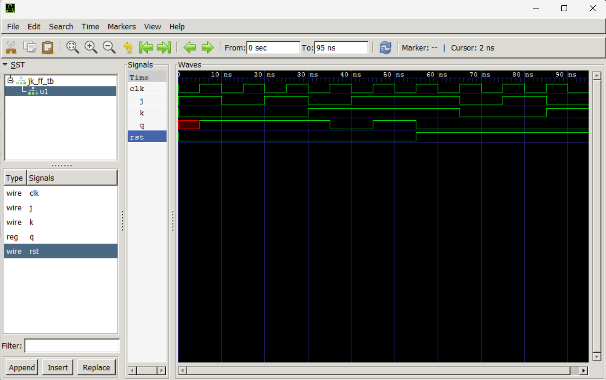

使用说明¶
1.基本说明¶
这是数字逻辑课程实验部分Verilog实验需要的代码。根据课程安排实验部分最后四个实验为Verilog实验。但由于某些原因（(╬▔皿▔)）。此时学习Verilog明显来不及，故此文件夹将写好的Verilog实验放置在此处。
方便各位的取用。使用方法见下文
2.Verilog安装教程¶
步骤1:下载¶
使用代码前请安装Verilog，点击跳转官网
{kind=link}
选择合适的版本下载后安装好，请记住安装的位置，这十分重要。
步骤2:配置环境¶
打开个性化菜单，搜索高级系统设置，点击环境变量，点击Path（用户和系统都可以，可能因电脑而异，请注意）
   
{kind=link}
{kind=link}
{kind=link}
{kind=link}
{kind=link}
{kind=link}
选中这两个文件夹，添加路径。位置就在你安装Verilog的位置，希望你还记得。
{kind=link}
步骤3:vscode¶
下载vscode并安装好点击跳转官网（这个东西应该不用我教吧w(ﾟДﾟ)w）
打开后，在左边最下面的选项里装好这些玩意。（自力更生党可以用这些自己写实验，伸手党可以直接用文件夹里的(๑•̀ㅂ•́)و✧）

{kind=link}
文件使用说明¶
说明：这个实验分检查和实验报告，报告需要贴上模型代码，测试代码，波形图分析等。而检查需要给助教检查波形图。
ALU，7_vote,jk,Time文件为模型代码
ALUtb,7tb,Timetb,jktb文件为测试代码
vcd为波形图文件
这里是波形图产生方法
打开Terminal，输入gtkwave+需要打开的波形图文件地址，这里以jkwave.vcd为例，打开后出现如下界面代表成功，可以给助教看了
  
{kind=link}
{kind=link}
{kind=link}
说明下四个实验，第一个为八位运算器（AlU），第二个为七人投票器（7_vote)，第三个为jk触发器（jk）,第四个为时序电路（Time）。
tips:我还会上传一个实验报告参考，请不要抄袭哦（（◐▽◑）老师在看着你~~）
常见问题说明¶
1.为什么按照方法波形图也打不开
答：请看配置环境，你的gtkwave很可能没配置上▄︻┻┳═一…… ☆（>○<)
2.vscode终端全是乱码
答：编码问题，建议先别急着装中文配件（相信在璐遥老师的锻炼下大家都看的懂吧（´v｀））
3.vscode插件配置不上，各种功能用不了
答：这个问题很复杂，可能需要具体解决，但是按照上面那个网站走基本不会出错，所以请一定按照步骤走
4.待补充
In the end¶
写这篇文章的时候已经离我搞这个东西有段时间了，所以记忆可能有纰漏，还请见谅orz。有问题可以邮箱（3140308969@qq.com）联系我（虽然不一定能解决），如果能解决我会回来补充这篇的。 总之大家看到这辛苦了，去喝杯奶茶犒劳下自己吧(o゜▽゜)o☆[BINGO!]